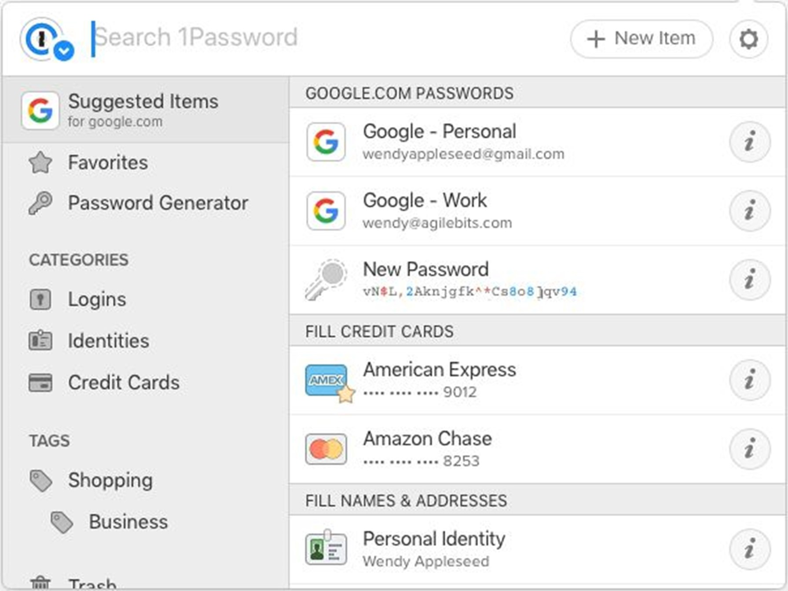

Linux-käyttöjärjestelmässä on rajoitetusti tuettuja salasanojen hallintaohjelmia. Chrome- tai Firefox-selainta tukevalla salasananhallinnalla on kuitenkin suuret mahdollisuudet toimia Linuxissa. Tässä osiossa esiteltynä viisi parasta salasanaholvia KeePassin ohella, jotka ovat Linuxin tukemia vaihtoehtoja. Nämä salasanojen hallintaohjelmat pääset lataamaan alla olevista linkeistä.
1Password for Linux (maksullinen)
Hallitsee työntekijöiden käyttöoikeuksia turvallisesti monen käyttäjän tukitoiminnon avulla. Käytössä useissa yrityksissä, sillä tarjoaa työntekijöille ilmaiset perhetilit erinomaisin salausominaisuuksin.
Ominaisuudet:
- Toimintaloki kirjaa säännölliset tarkastukset.
- Analyyttiset käyttöraportit.
- Monivaiheinen vahvistus kaikilla synkronoiduilla laitteilla.
- Verkkopohjainen, työpöytä- ja sovellustuki.
- Kojelauta hallinnan helpottamiseksi.
- Matkatila arkaluontoisten tietojen suojaamiseksi.
- Tekninen asiakastukitiimi.
Plussat:
- Helppo navigoida käyttöliittymässä.
- Ilmainen kokeilusuunnitelma.
- Automaattisen täytön tiedot sisäänkirjautumisen aikana.
- Tukee kaikkien työntekijöiden perhesuunnitelmia.
Haittoja:
- Ei mitään.
LastPass for Linux (ilmainen, myös maksullinen premium versio saatavana)
Henkilökohtainen salasanahallintaa, LastPass avulla voidaan käyttää synkronoituja salasanoja ja muistiinpanoja turvallisesti useissa laitteissa. Lisäksi voidaan jopa antaa luotettujen ystävien ja sukulaisten käyttää tiliäsi hätätilanteessa.Ominaisuudet:
- Salasanageneraattori yksilöllisille salasanoille.
- Osta turvallisesti verkossa LastPass-lompakosta.
- Salasanojen nopea ja turvallinen jakaminen.
- Synkronoi salasanat useiden laitteiden välillä.
- Suojattu digitaalisen datan säilytys.
Plussat:
- Helppokäyttöinen.
- Helppo jakaa turvallisesti salasanoja.
- Hallitse tiimiä keskitetysti.
Haittoja:
- Mobiilisovelluksissa voi esiintyä useita sisäänkirjautumis -epäonnistumisia.
- Chrome-laajennus voi olla hidas.
Keeper for Linux (maksuton kokeilu, maksullinen)
Keeper on kiistatta kevyin KeePass for Linux vaihtoehto. Käyttäjille, jotka ajattelevat yksinkertaisuutta mutta kuitenkin yksinomaan henkilötodistustensa turvaamista, Keeper on paras valinta. Se sopii parhaiten mobiililaitteille ja synkronoi kaikki käyttäjän salasanat selainten laajennuksissa ja sovelluksissa.Ominaisuudet:
- Parempi suojaus kahdella tekijällä.
- Tuettu useilla alustoilla.
- Saatavilla 24/7 tuki.
- Hallitse keskitetysti työntekijöiden salasanojen käyttöä.
Plussat:
- Halpa verrattuna kilpailijoihin.
- Varastotila.
- Suojattu salasanan jakaminen.
- Käyttää kaksivaiheista todennusta.
Haittoja:
- Rajoitetut ominaisuudet verrattuna kilpailijoihin.
- Ei täysin automatisoitu.
Enpass for Linux (maksullinen)
Enpass täyttää käyttäjätiedot automaattisesti kirjautumisen aikana. Se on suosittu KeePassx Ubuntu -vaihtoehto, koska se on täysin ilmainen ja luotettava lisäominaisuuksilla.Ominaisuudet:
- Salasanageneraattori.
- Käyttäjätiedot täyttyvät automaattisesti.
- Salasanasuojaus salasanojen turvallisuuden varmistamiseksi.
- Integroi useita holveja yhdelle tilille.
- Kaksivaiheinen todentaminen.
Plussat:
- Salasanojen automaattinen sieppaus.
- Tuettu useilla alustoilla.
- Synkronoi tunnistetiedot pilveen.
- Tehokas salasanageneraattori.
Haittoja:
- Puuttuu perhe- tai liiketoimintasuunnitelmat.
- Ei hälytyksiä salasanan rikkomisesta.
- Puuttuu hätäyhteysvaihtoehto.
Dashlane for Linux (maksullinen)
Dashlane-matkapuhelinkäyttäjillä on kevyt ja helppokäyttöinen käyttöliittymä. Siksi Dashlane sopii käyttäjille, joiden saattaa olla vaikea käyttää KeePass Linuxia tai Enpassia mobiililaitteessa. Sen käyttöliittymä on Käyttäjäystävällinen ja useat verkkosivustot tukevat sitä.Ominaisuudet:
- Lomakkeiden automaattinen täyttö.
- Luo salasanoja.
- Suojattu säilö asiakirjoille.
- Ilmoitukset tietoturvaloukkauksista.
- Yhteystiedot hätätilanteissa.
Plussat:
- Käyttäjäystävällinen käyttöliittymä.
- Tuettu useilla alustoilla.
- Salasanojen automaattinen vaihto.
- Salasanojen turvallinen jakaminen.
- Tarkasta salasanojen vahvuus.
Haittoja:
- Rajoitetut ominaisuudet mobiililaitesovellusten käyttäjille.
- Useiden toimintojen epäonnistuminen.